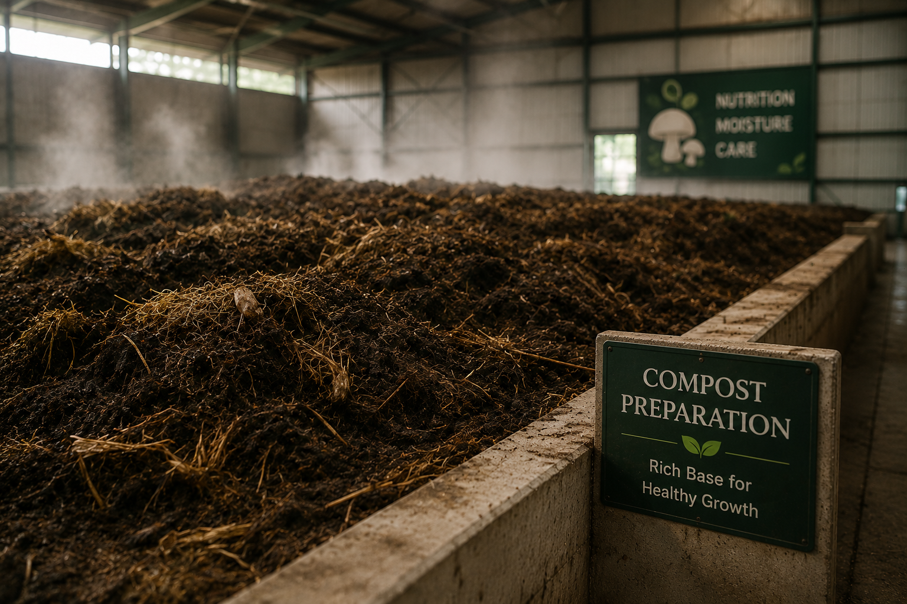
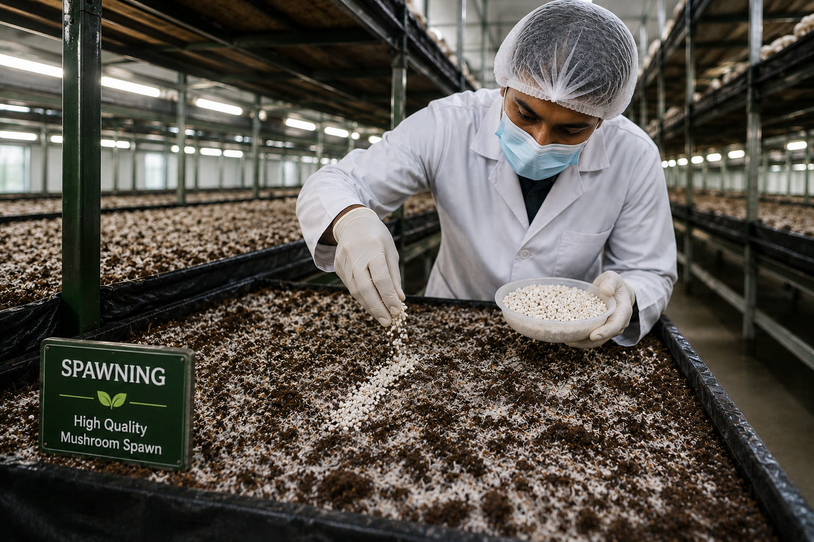
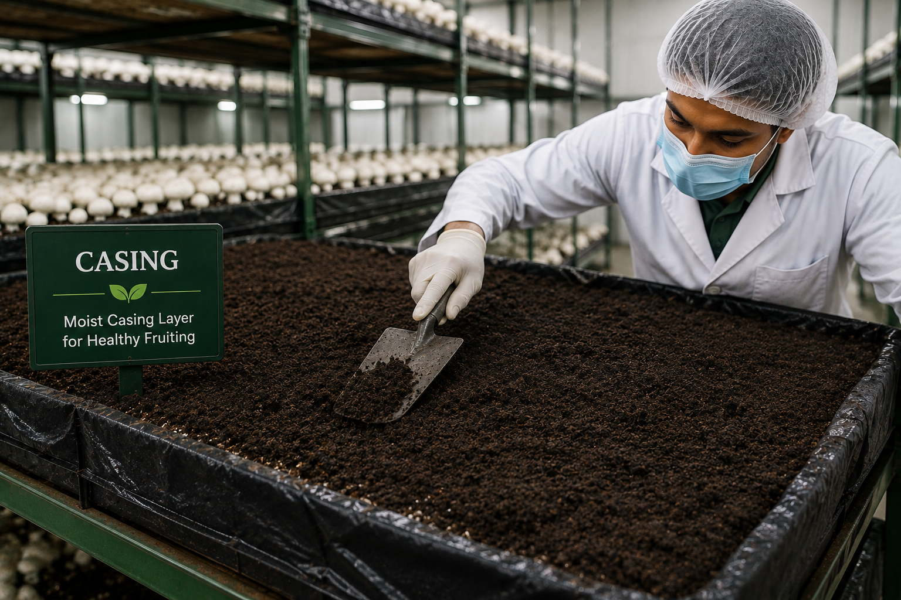
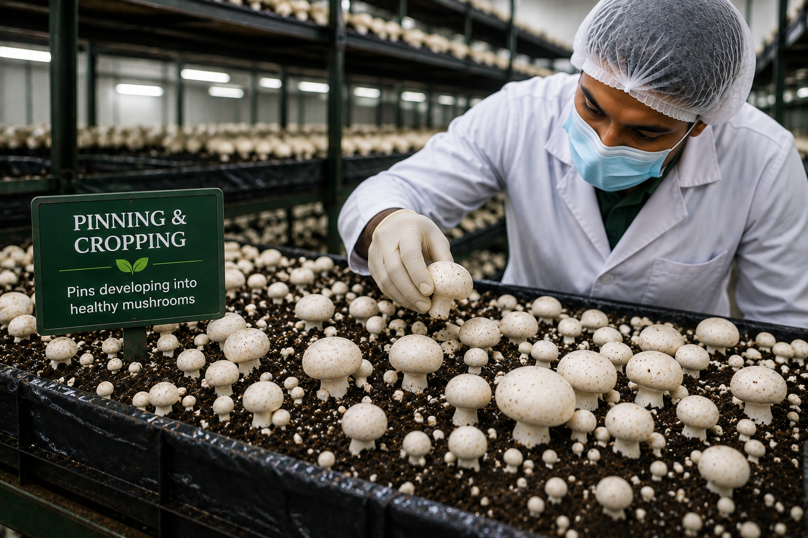
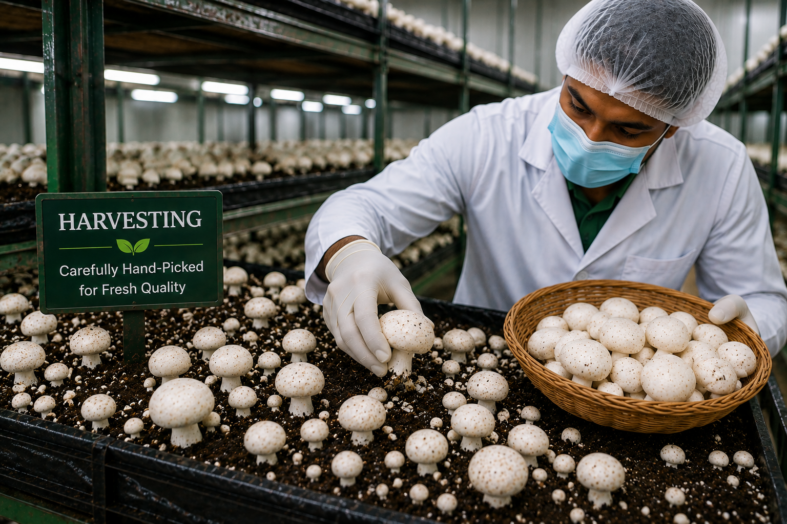
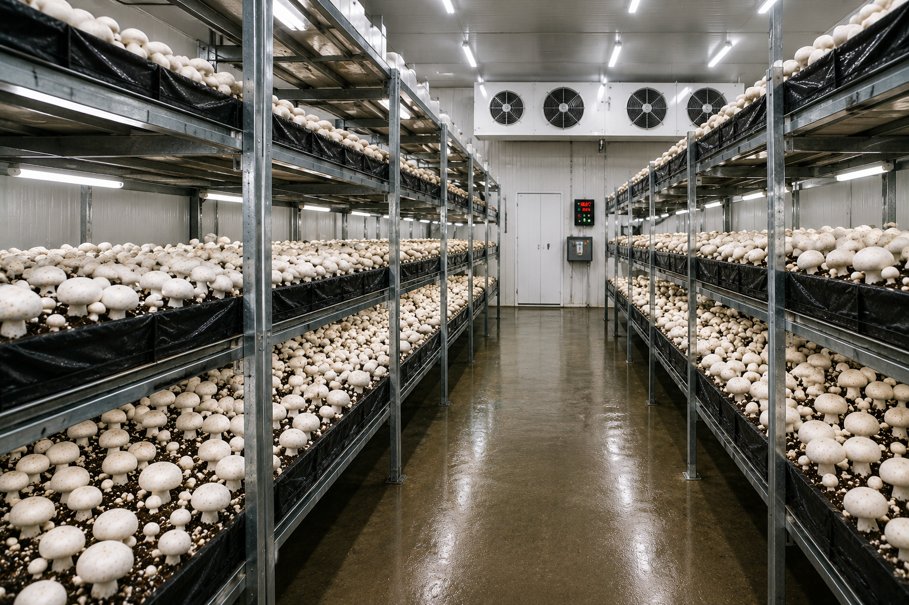

Discover how we cultivate fresh button mushrooms through a clean and carefully controlled process.
Button mushrooms require the right balance of temperature, humidity, ventilation and hygiene.
Growing rooms are carefully managed to maintain suitable temperatures at each stage of cultivation.
Moisture levels are monitored to support healthy mushroom development without excess water.
Ventilation helps maintain the right air quality and carbon dioxide levels inside the growing room.
Hygiene is maintained throughout the farm to support healthy mushroom growth.

A nutrient-rich compost is prepared to create a suitable growing medium for button mushrooms.
The compost is mixed, conditioned and maintained carefully before mushroom spawn is introduced.

High-quality mushroom spawn is evenly mixed or placed into the prepared compost.
During this stage, the compost is kept under suitable environmental conditions to encourage mycelium growth.

Once the compost is colonized, a moist casing layer is applied over the surface.
This layer helps retain moisture and creates suitable conditions for mushrooms to begin forming.

Small mushroom pins begin appearing once the right temperature, humidity and ventilation are maintained.
These pins gradually develop into mature button mushrooms ready for harvesting.

Button mushrooms are carefully harvested when they reach the right size and maturity.
Gentle hand-picking helps protect their shape and quality before they move to cleaning and packaging.
Prepare and condition the compost.
Introduce and incubate mushroom spawn.
Add casing material for fruiting.
Maintain ideal growing conditions.
Carefully pick fresh mushrooms.
Mushroom cultivation depends heavily on environmental control. That is why growing rooms are monitored carefully throughout the cultivation cycle.

Explore our fresh button mushroom products and bulk supply options.
View Our Products